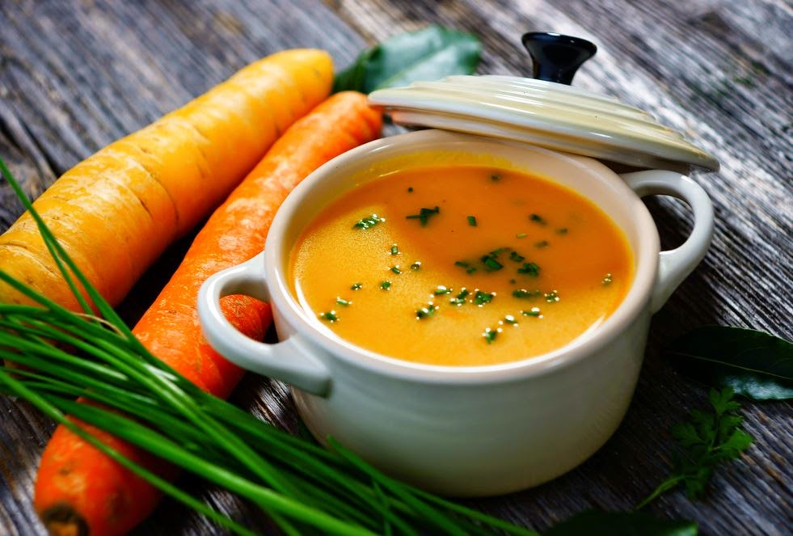
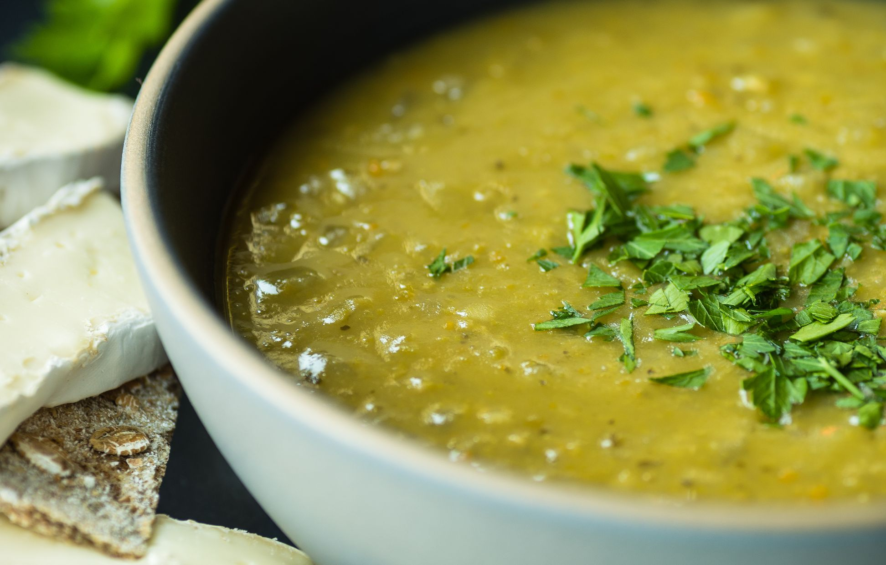
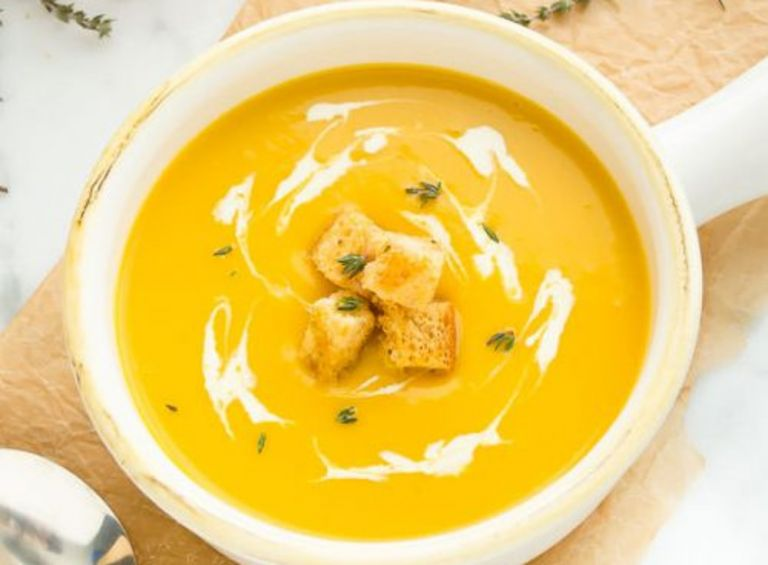

Un potaje es un plato tradicional que se caracteriza por ser una preparación
a base de legumbres, verduras, carnes o pescados, cocidos lentamente en un caldo aromático.
Esta elaboración culinaria se destaca por su versatilidad y su capacidad para combinar
una amplia variedad de ingredientes, lo que lo convierte en un plato reconfortante y nutritivo.
Los potajes tienen sus raíces en diversas culturas gastronómicas alrededor del mundo,
y cada una ha aportado su propia interpretación y combinación de ingredientes a esta
preparación. Desde el tradicional cocido español hasta el feijoada brasileño o el potaje
de lentejas en la cocina mediterránea, cada región ha desarrollado su versión única
de este plato.
La preparación de un potaje suele implicar la cocción lenta de los ingredientes
en un caldo o líquido base, lo que permite que los sabores se mezclen y desarrollen
profundidad. Además, los potajes son conocidos por ser platos reconfortantes,
ideales para épocas frías o para compartir en familia.
un poco de historia
El potaje tiene su origen en la cocina medieval del norte de Francia y su popularidad aumentó
a partir de la Alta Edad Media. Un curso en una fiesta medieval a menudo comenzaba con uno o
dos potajes, seguidos de carnes asadas.
Los huertos caseros europeos a menudo contenían una variedad de cultivos que crecían juntos.
Estos fueron llamados potajes por los franceses, ya que la cosecha de ese jardín se usaba
para hacer potajes.
El manuscrito de cocina más antiguo conocido en idioma inglés, La forma de Cury, escrito
por los chefs de la corte del rey Ricardo II en 1390, contiene varias recetas de potajes,
incluida una hecha con repollo, jamón, cebollas y puerros. Un manuscrito ligeramente posterior
de la década de 1430 se llama Potage Dyvers ("Varios potajes"). La palabra "potaje" se usa en
las primeras traducciones inglesas de la Biblia, en relación con la sopa de lentejas por la
que Esaú intercambia su primogenitura en Génesis 25: 29–34; De esta historia, la frase " potaje "
significa algo atractivo pero de poco valor que se cambia por algo mucho más importante.

Durante el período Tudor, la dieta de muchos campesinos ingleses consistía casi exclusivamente
en potaje. Algunas personas de la era Tudor comían verduras autocultivadas como coles y
zanahorias y algunas pudieron complementar esto en huertos frutales con árboles frutales cercanos.
Algunos potajes típicos de la cocina medieval eran frutales, gelatinosos (carne o pescado
en áspic), mawmenny (un guiso espesado de capón o ave similar) y peras en almíbar. También
había muchos tipos de potajes hechos de líquidos espesados (como leche y leche de almendras)
con puré de flores o frutas trituradas o coladas.
Según las costumbres religiosas catalanas, si una festa doble (una "fiesta doble" en la iglesia)
caía en un día de carne, se servían dos platos de potaje consecutivos, uno de los cuales sería
un plato de arroz o fideos con queso y el otro un plato de carne. guiso (catalán: guisat)
cocinado en " salsa " elaborado con vino, vinagre, perejil, bazo, hígado, azafrán,
yemas de huevo y especias variadas. También se sirvieron dos platos de potaje para
los días de pescado, primero espinacas de alta calidad de los jardines del monasterio
cubiertas con pimientos, o repollo o lechuga (si no se podían encontrar espinacas),
seguido de un plato de sémola o fideos o arroz cocido en almendras. leche, o un plato de
granos de sémola sémola condimentada con canela.

En la cocina actual, los potajes siguen siendo valorados por su versatilidad
y su capacidad para alimentar a toda la familia de manera saludable. Son una
opción popular para aquellos que buscan comidas reconfortantes y nutritivas.
Además, con la creciente tendencia hacia una alimentación consciente y sostenible,
los potajes se han convertido en una opción atractiva ya que permiten aprovechar
al máximo los ingredientes frescos y locales.
han evolucionado para adaptarse a diferentes preferencias dietéticas y culinarias
. Se pueden encontrar versiones vegetarianas que resaltan las legumbres y
verduras frescas, así como interpretaciones más ligeras que utilizan
técnicas de cocción más saludables. Asimismo, los chefs creativos han
elevado los potajes a un nivel gourmet al experimentar con combinaciones
únicas de ingredientes y presentaciones elegantes.